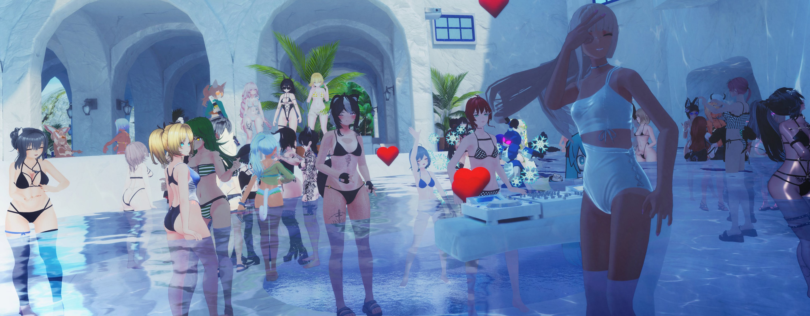

I'm okgold, I've been contributing and growing with virtual communities for years. I'm known for my cheery atmosphere, realistic fashion sense, and relaxed house music DJ sets. Here are some of my projects I'm proud of:
Awards:
- Runner up in official VRChat summer world Jam
- Winner, official VRChat film jam
- 5th Place in itch.io aqua competition
Skills:
- Unity Developer
- Expert in baked lightmap creation & troubleshooting
- Blender 3D: Modeling, UV creation, cloth simulations
- Optimization, mobile applications
Consider checking out theResident Advisor Documentary,a great introduction to the concept of a VR rave scene. I was commissioned to help with filming and direction on this project
DEPTH˸ 3D Visual Experiment
Designed a museum space and theater using modified stereoscopic shaders. Curated a one-night experimental gala where prominent VR rave scene VJs performed on the stereoscopic 3D screens for the first time. The space was decorated with static renders and photos from artists new to the medium of stereoscopy. World isstill available to visitwith a short example of the VJ work performed. I've also uploaded a technical presentation that took place after the show.

Friend Club: Unique Events and Spaces
For over two years I've been modeling and curating highly themed one-time events to surprise friends and community members. These parties have gotten a reputation as being can't-miss, and we've brought on a huge variety of community DJs and talent to help match the vibe. Just a few of our special themed events:
Golden Sunset's Poolside Party
I wanted to subvert the bright neon and dark spaces of the existing rave scene, and share the taste of outdoor music that I love. Golden Sunset became a staple of the rave community, offering horizon views, green folliage, and no bright screens or stimulation. The event has inspired many in the community to create or don their own swimsuits to feel immersed in the world. Over two years I've now created 5 different pool party worlds, with the most recent version being selected to host an official VRChat party with the dev team.

Realistic Fashion Within the Fantastical
I've developed a reputation for bringing a realism and adaptability to VR Fashion within our community. I model, shape, adapt and mix digital clothing from unique sources, and change to match events I'm going to, or feelings I want to express. I've created hundreds of unique avatars, some of my latest of which are documented here. I also photograph and curate a fashion blog that catalogue's realistic looks I see within VR